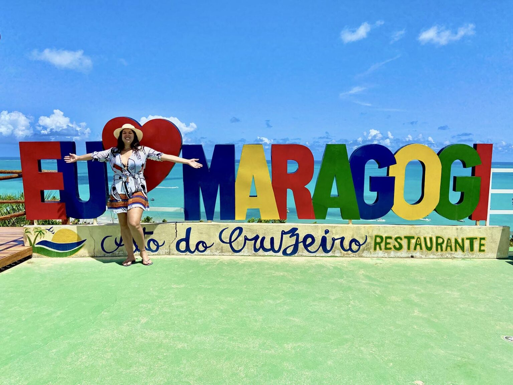

Se você procura uma praia paradisíaca com águas mornas e cristalinas, a
Praia dos Carneiros é o lugar.
Localizada no litoral Sul do Estado, está
a cerca de 98 km de Recife e tem uma paisagem de tirar o fôlego.
Esse
destino encantador se forma a partir do encontro das águas do Rio
Formoso com o mar.
Não deixe de aproveitar o passeio de catamarã (opcional) e se você é daqueles vaidosos e quer rejuvenescer, banho de argila é vida! Então aproveite a parada que fazemos na Praia de Guadalupe durante o passeio para se jogar e aproveitar esse banho.
Observações do passeio:
Maragogi
Já imaginou viajar para o Nordeste e conhecer o Caribe Brasileiro? Sim é possível!
Estamos falando de Maragogi, um paraíso localizado a 130 km do Recife e a 80 km de Porto de Galinhas.
A paisagem é perfeita! Composta por um mar tranquilo, águas mornas e de um azul turquesa que impressiona qualquer pessoa que ali chegar, além de um incrível ecossistema formando aquários naturais em meio a recifes de corais.
Que tal um passeio de catamarã (opcional) para as piscinas naturais ou pela orla das Praias de Maragogi e de buggy (opcional) para conhecer as famosas praias de Antunes, Barra Grande, Burgalhau e Xaréu? Vem com a gente curtir esse lugar maravilhoso!